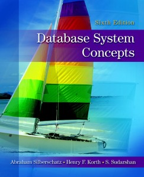

Book Chapters
- Introduction
- Entity-Relationship Model
- Relational Model
- SQL
- Other Relational Languages
- Integrity and Security
- Relational-Database Design
- Object-Relational Databases
- XML
- Storage and File Structure
- Indexing and Hashing
- Query Processing
- Query Optimization
- Transactions
- Concurrency Control
- Recovery System
- Database System Architectures
- Distributed Databases
- Parallel Databases
- Application Development and Administration
- Advanced Querying and Information Retrieval
- Advanced Data Types and New Applications
- Advanced Transaction Processing
- Oracle
- IBM DB2 Universal Database
- Microsoft SQL Server
Authors
- Abraham Silberschatz
- Henry F. Korth
- S. Sudarshan
Acronyms
- Database
- structured set of data held in a computer, especially one that is accessible in various ways
- SQL
- Structured Query Language
- XML
- eXtensible Markup Language
- IBM
- International Business Machines